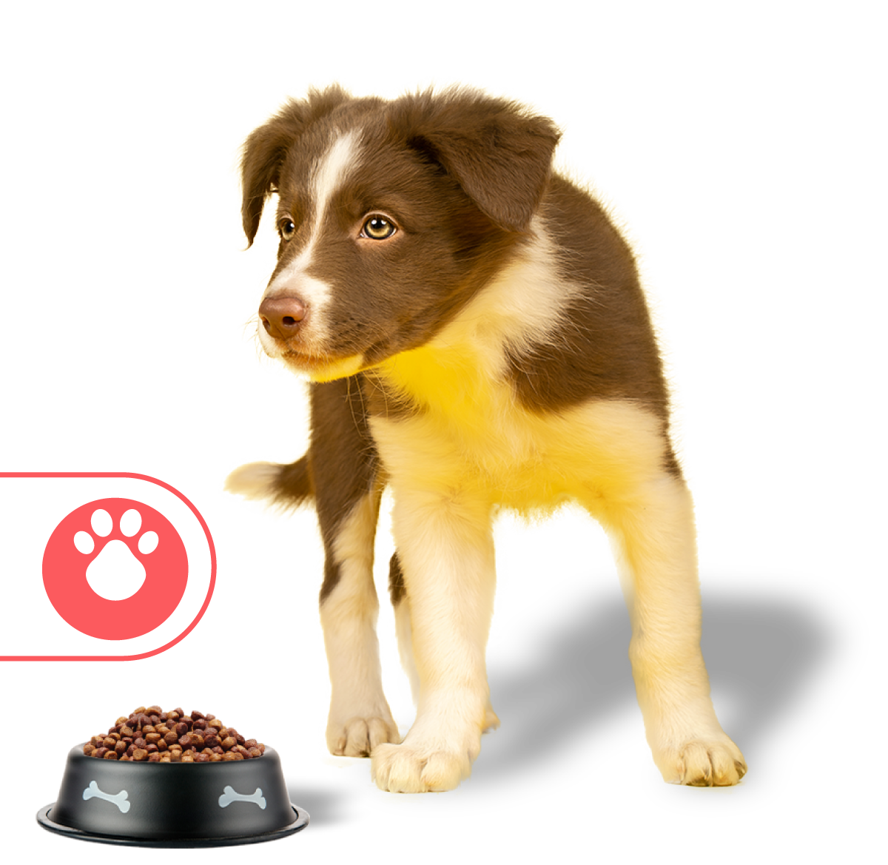

Ringo es una marca colombiana creada y desarrollada por el Grupo Bios, una empresa nacional con una larga trayectoria en el sector agroindustrial. El Grupo Bios está conformado por varias compañías dedicadas a la producción de alimentos, proteína animal y nutrición de mascotas. Dentro de este grupo, Ringo representa la línea especializada en alimentación para perros, elaborada por expertos en nutrición animal, veterinarios y técnicos que trabajan en el desarrollo de fórmulas balanceadas con ingredientes de calidad. El equipo detrás de Ringo busca ofrecer productos que cubran las necesidades nutricionales de los perros en cada etapa de su vida, garantizando una buena digestión, energía y bienestar. Además, la marca forma parte del compromiso social del Grupo Bios, que promueve el cuidado responsable de las mascotas y apoya programas de adopción y bienestar animal. En resumen, quienes están detrás de Ringo son profesionales colombianos comprometidos con mejorar la calidad de vida de los perros a través de una alimentación confiable, nutritiva y accesible para todos.
